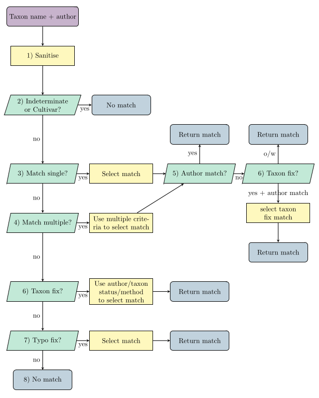

Method of Matching taxonomic records
Matching.RmdIn BGSmartR we use an opinionated method to match taxonomic records to enrichment databases (such as Plants of the World Online (POWO) or IUCN Red List) using taxonomic names of plants . Our method is automatic and does not require any manual alterations. Moreover, rather than rely on “fuzzy” matching in difficult cases we apply criteria functions to find the best possible match.
Introduction
Records in a collection are matched via their taxonomic name and taxonomic author/s (if provided). A frustration with taxonomic data is that often the taxonomic name itself is frequently not unique - for example Abies taxifolia. This is often compounded by collections not storing the taxonomic author, resulting in multiple matches. Moreover, since collections data are often converted from old paper records there is a strong possibility that there could be mistakes or typos in the taxonomic name. For example an hybridization marker might be missed out or the wrong infraspecific group used.
Hence, our method attempts to match taxonomic names to external databases whilst automatically accounting for these common issues.
Matches of taxonomic records are found by processing the taxonomic name and taxonomic author/s through a matching ‘pipeline’. The pipeline is summarized in the flow chart below.

Each taxonomic record is matched by flowing through the pipeline shown. The purple state indicated the start of the algorithm. blue states correspond to obtaining a match (or no match), yellow to process steps and green to decisions that are made in the algorithm. Steps of the algorithm (numbered in the diagram) are explored in Parts of the Algorithm section.
The matching functions discussed within are wrapped together into the
function enrich_collection() to enrich a collection with
information from WCVP/Red list/BGCI. This can be used to match and
enrich your collection without concerning yourself with the method
applied. See vignette XX to see the function in action.
For those with interest, we discuss the functions used in matching taxonomic names, how they link together and how they can be used to create a custom-matching algorithm to other databases. Throughout we will mostly concern ourself with matching to WCVP.
Whole Algorithm
To match to WCVP we use the function
match_collection_to_wcvp() which performs all the steps of
the matching algorithm outlined previously.
We need to define a collection with taxonomic names and
authors and WCVP database before running the matching algorithm. The
wcvp database needs to be created using
import_wcvp_names() in BGSmartR. This takes the version of
WCVP from POWO and “enhances” it to include extra information required
in our matching algorithm.
# Load (simplfied) wcvp.
load('data/wcvp_matching_example.rda')
# Create collection database.
ids = 1:7
taxon_names = c('Amsonia ciliata', 'Abies taxifolia', 'Acalypha gracilens f. fraseri',
"Petunia 'Night Sky'", 'Artemisia pfaffii', 'Acmena hemilamprae', 'Amsonia gracilens')
taxon_authors = c('Walter', 'Desf.', 'Weath.', '', 'Giacom. & Pignatti','L.M.Perry', 'L.')
collection = data.frame(ids, taxon_names, taxon_authors)
# Run matching to wcvp.
match_collection_to_wcvp(collection,
wcvp = wcvp,taxon_name_column = 'taxon_names',
taxon_author_column = 'taxon_authors',
typo_method = 'All')
#> ℹ `7` records found.
#>
#> ── Extracting taxon names and authors from the original report ──
#>
#> ── Reducing to unique taxon name and author combinations ──
#>
#> ℹ `7` unique taxon names/ taxon name author combinations found.
#> ℹ Found 0 exceptions to known not in POWO.
#>
#> ── Removing known not to be in POWO from 7 names ──
#>
#> ✔ Found 1 known not to be in POWO
#>
#> ── Matching 6 names to unique taxon names ──
#>
#> ✔ Found 1 of 6 names
#>
#> ── Matching 5 names to non-unique taxon names ──
#>
#> ✔ Found 1 of 5 names
#>
#> ── Testing and matching taxon name issues for 4 names ──
#>
#> ℹ Trying removing autonyms from taxon names
#> ℹ Trying changing infraspecific level to 1 name
#> ℹ Trying fixing hybrid for taxon names with 2/3/4 words 4 names
#> ✔ Found 2 of 4 names
#>
#> ── Testing and matching typos for 2 names ──
#>
#> ✔ Found 1 of 2 names
#>
#> ── Converting to accepted name.. ──
#>
#> ✔ Updated to accepted name for 3 of 7 names
#>
#> ── Matching Complete ──
#>
#> $match
#> [1] 35 39 7 -1 17 30 -3
#>
#> $details
#> [1] "Amsonia ciliata -> (matches record with single entry) -> (76904-1, Amsonia ciliata)"
#> [2] "Abies taxifolia -> (Multiple records in enriched database) -> (Exact author match) -> (261644-1, Abies taxifolia) -> (Go to accepted name) -> (60468511-2, Abies alba)"
#> [3] "Acalypha gracilens f. fraseri -> (Try Fixing taxomonic name) -> Acalypha gracilens var. fraseri -> (single fixed record) -> (1280-2, Acalypha gracilens var. fraseri) -> (Go to accepted name) -> (1278-2, Acalypha gracilens)"
#> [4] "Petunia 'Night Sky' -> (Cultivar or Indeterminate <Do not attempt matching>)"
#> [5] "Artemisia pfaffii -> (Try Fixing taxomonic name) -> Artemisia × pfaffii -> (single fixed record) -> (179958-1, Artemisia × pfaffii)"
#> [6] "Acmena hemilamprae -> (Typo) -> Acmena hemilampra -> (matches record with single entry) -> (590531-1, Acmena hemilampra) -> (Go to accepted name) -> (77072406-1, Syzygium hemilamprum)"
#> [7] "Amsonia gracilens -> (No match found)"
#>
#> $details_short
#> [1] "EXACT" "EXACT, ACCEPTED" "ACCEPTED, FIX"
#> [4] "CULT/INDET" "FIX" "EXACT, TYPO, ACCEPTED"
#> [7] "NO_MATCH"
#>
#> $match_taxon_name
#> [1] "Amsonia ciliata" "Abies taxifolia"
#> [3] "Acalypha gracilens var. fraseri" NA
#> [5] "Artemisia × pfaffii" "Acmena hemilampra"
#> [7] NA
#>
#> $original_authors
#> [1] "Walter" "Desf." "Weath."
#> [4] "" "Giacom. & Pignatti" "L.M.Perry"
#> [7] "L."
#>
#> $match_authors
#> [1] "Walter" "Desf."
#> [3] "(Mull.Arg.) Weath." NA
#> [5] "Giacom. & Pignatti" "(F.Muell.) Merr. & L.M.Perry"
#> [7] NA
#>
#> $author_check
#> [1] "Identical" "Identical" "Partial" "No Match" "Identical" "Partial"
#> [7] "No Match"In the example we see that matches are found for 5 out of the 7
inputted taxonomic names (those with a positive $match).
The values in match correspond to the row number in wcvp of the matched
record. Moreover, the output provides $details_short and
$details that describe how the matches occurred. Also
outputted are $match_taxon_name,
$original_authors, $match_authors and
$author_check which can be used to compare authors and
taxonomic names between the inputted collection and wcvp.
match_collection_to_wcvp() takes a variety of different
inputs to allow flexibility in the matching. For example inputs
include
-
do_add_split: A toggle for whether we search for missing f./var./subsp, -
do_fix_hybrid: A toggle for whether we search for hybrid issues, -
do_rm_autonym: A toggle for whether we try removing autonyms, -
typo_method: The level of typo finding required, -
do_convert_accepted: A toggle for whether we convert to accepted names,
further details can be found in the function’s documentation.
Parts of the Algorithm
In this section we will illustrate each part of the matching
algorithm. The database we want to match the collection’s taxonomic
names to we refer to as the enrichment database. Note that the
information of WCVP is contained within two databases named
wcvp_names and wcvp_distribution. In the following
matching examples we match to wcvp_names which is located at
wcvp$wcvp_names.
1) Sanitise taxon names
This step is used to standardise the format of the taxon name in the
original report. The standard format we implement is every character
should be lower case except for the first letter of the Genus. We
standardise the hybrid sign to be × rather than x or
X (or the rare case of h or H).
We also ensure that the infraspecific level is of the format
f., var., subsp. or
nothosubsp..
Note that the sanitisation should also be performed on the enrichment
database. For WCVP this is performed in
import_wcvp_names().
We apply sanitise_name() to clean taxonomic names in the
collection.
sanitise_name('TRIGONELLA smyrnaea')
#> [1] "Trigonella smyrnaea"
sanitise_name('Halimium X pauanum')
#> [1] "Halimium × pauanum"
sanitise_name('Aruncus dioicus var acuminatus')
#> [1] "Aruncus dioicus var. acuminatus"2) Remove cultivars and indeterminantes
This step sets the match to -1 for the taxon names we
know do not appear in the enrichment database. For WCVP this includes
cultivars and indeterminates. We find these taxon names by pattern
matching in particular we check for the following patterns.
- Includes
sp.. - Includes
gx. - Includes
gx. - Includes
'XX'for some text XX. This is common notation for cultivars. - Includes
[. - Begins with
Indet. - Ends in
indet. - Ends in
cv. - Includes
cv.. - Includes
unkn. - Ends in
hybrid. - Includes
unknown.
This is performed using by no_match_cultivar_indet().
For these taxon names we set the output message to
(Cultivar or Indeterminate <Do not attempt matching>).
taxon_names = c('Acalypha fruticulosa', 'Asclepias sp.', "Abies umbilicata 'Some Cultivar'",
'Ammi copticum cv.')
no_match_cultivar_indet(taxon_names)
#> $match
#> [1] NA -1 -1 -1
#>
#> $message
#> [1] ""
#> [2] " -> (Cultivar or Indeterminate <Do not attempt matching>)"
#> [3] " -> (Cultivar or Indeterminate <Do not attempt matching>)"
#> [4] " -> (Cultivar or Indeterminate <Do not attempt matching>)"3) Match taxon names to “unique” taxon names in enrichment database
This step matches the taxon names in the collection to the records in the enrichment database that have a “unique” taxonomic name. By this we mean the taxonomic name exists for a single record in the enrichment database and there are not multiple plants with different authors sharing the same taxonomic name.
As the taxonomic name is unique no further matching decisions are required (e.g authors).
This step is performed using match_single().
# Choose some taxon names
taxon_names = c("Amaranthus graecizans subsp. silvestris", "Amsonia ciliata", "Aristolochia islandica", "Adenocalymma scabriusculum", "Fake name")
# Choose the indices of wcvp which correspond to a unique taxon name using `single_entry`.
wcvp_search_index_single = which(wcvp$wcvp_names$single_entry == T)
# Perform the match
match = match_single(taxon_names = taxon_names,
enrich_database = wcvp$wcvp_names,
enrich_database_search_index = wcvp_search_index_single,
enrich_display_in_message_column = 'powo_id'
)
match
#> $match
#> [1] 21 35 37 36 NA
#>
#> $message
#> [1] " -> (matches record with single entry) -> (108437-3, Amaranthus graecizans subsp. silvestris)"
#> [2] " -> (matches record with single entry) -> (76904-1, Amsonia ciliata)"
#> [3] " -> (matches record with single entry) -> (19504-2, Aristolochia islandica)"
#> [4] " -> (matches record with single entry) -> (108156-1, Adenocalymma scabriusculum)"
#> [5] ""We see that match is a list that contains:
-
$matchthe corresponding row inwcvp$wcvp_names, if no match returnNA. -
$messagethat informs on how the match is obtained, if no match the message is set to''.
If we find a match the algorithm uses
enrich_display_in_message_column by default also provides
the powo_id (e.g. 108437-3) which can be used
to search for the plant directly on POWO’s website. This output code in
the message can be changed for any column in
wcvp$wcvp_names using the input
enrich_display_in_message_column.
match_single(taxon_names = taxon_names, enrich_database = wcvp$wcvp_names,
enrich_database_search_index = wcvp_search_index_single,
enrich_display_in_message_column = 'plant_name_id')
#> $match
#> [1] 21 35 37 36 NA
#>
#> $message
#> [1] " -> (matches record with single entry) -> (2632859, Amaranthus graecizans subsp. silvestris)"
#> [2] " -> (matches record with single entry) -> (8441, Amsonia ciliata)"
#> [3] " -> (matches record with single entry) -> (2651517, Aristolochia islandica)"
#> [4] " -> (matches record with single entry) -> (319419, Adenocalymma scabriusculum)"
#> [5] ""Moreover, for this function the match can be changed from the row
number in wcvp$wcvp_names to any column using the input
match_column, for example
match_single(taxon_names = taxon_names, enrich_database = wcvp$wcvp_names,
enrich_database_search_index = wcvp_search_index_single,
match_column = 'taxon_status',
enrich_display_in_message_column = 'plant_name_id')
#> $match
#> [1] "Accepted" "Accepted" "Accepted" "Accepted" NA
#>
#> $message
#> [1] " -> (matches record with single entry) -> (2632859, Amaranthus graecizans subsp. silvestris)"
#> [2] " -> (matches record with single entry) -> (8441, Amsonia ciliata)"
#> [3] " -> (matches record with single entry) -> (2651517, Aristolochia islandica)"
#> [4] " -> (matches record with single entry) -> (319419, Adenocalymma scabriusculum)"
#> [5] ""4) Match to non-unique taxon names in enrichment database
By non-unique taxon names we mean names that have multiple entries in
the enrichment database (with different authors). For example suppose
our collection contains the taxon name 'Abies taxifolia'.
Searching in WCVP we find 6 records for that taxon name.
To decide which record best matches the plant in the collection we first try to match on the taxonomic author.
If it is not possible to match via taxonomic author we can use a custom matching criteria dependent on the enrichment database used. For WCVP one option is to use the taxon status and the accepted plant name to determine the best match. In particular, if all records go to the same accepted plant name then just pick any (if we later push matches to accepted names). Otherwise, use the taxon status where we first use the record if it is accepted, if none are accepted then use synonym.
To obtain the matches we use match_multiple() that
applies both author matching and custom criterias.
Below we give an example with Abies taxifolia and varying authors.
# Choose some taxon names
taxon_names = rep('Abies taxifolia',4)
taxon_authors = c('Desf.', 'Jeffrey', 'Gor', NA)
# Choose the indices of wcvp which correspond to a non-unique taxon name using `single_entry`.
wcvp_search_index_mult = which(wcvp$wcvp_names$single_entry == F)
# Perform the match
match = match_multiple(taxon_names = taxon_names,
taxon_authors = taxon_authors,
enrich_database = wcvp$wcvp_names,
enrich_database_search_index = wcvp_search_index_mult,
matching_criterion = BGSmartR::additional_wcvp_matching,
enrich_plant_identifier_column = 'plant_name_id',
show_progress = FALSE)
match
#> $match
#> [1] 9 20 20 -2
#>
#> $message
#> [1] " -> (Multiple records in enriched database) -> (Exact author match) -> (, Abies taxifolia)"
#> [2] " -> (Multiple records in enriched database) -> (Partial author <most words>) -> (, Abies taxifolia)"
#> [3] " -> (Multiple records in enriched database) -> (Partial author <most words>) -> (, Abies taxifolia)"
#> [4] " -> (Multiple records in enriched database) -> (No authors) ->(multiple best taxon status, do not match)"We see that without an author we cannot determine a match
($match = -2) this is due to having to use taxon status and
accepted plant name id for the matching criteria and these cannot select
a single record (accepted plant name ids not all the same, multiple best
taxon status synonym). When the author was provided we found
matches. For ‘Desf.’ the author matches exactly a record in
WCVP and Jeffrey, Gor both partially match
J.Jeffrey ex Gordon & Glend..
By default match_multiple() depends
match_authors() and no_additional_matching()
which performs author matching and custom matching respectively. Above
we use additional_wcvp_matching() which performs custom
matching for taxon_status and accepted plant name id. These can be
changed using the inputs matching_authors and
matching_criterion.
In the following subsections we describe author matching and custom matching.
Matching using taxonomic author.
Author matching is performed using match_authors(),
which takes both the author from the collection and the authors from the
enrichment database to compare. The function will initially try to match
the author exactly. If there are no exact matches it will then look for
partial matches (authors with shared words).
Example of an exact author match.
# Restrict wcvp to only taxon_name = 'Abies taxifolia'
wcvp_Abies_taxifolia = wcvp$wcvp_names[wcvp$wcvp_names$taxon_name == 'Abies taxifolia',]
# Get author name from the collection and author names from wcvp.
collection_author = 'Desf.'
wcvp_authors = wcvp_Abies_taxifolia$taxon_authors
# Match via authors
matched_info = match_authors(collection_author, wcvp_authors)
matched_info
#> $wanted
#> [1] TRUE FALSE FALSE FALSE FALSE FALSE
#>
#> $message
#> [1] "(Exact author match)"
# Restrict wcvp_Abies_taxifolia to only matched authors
DT::datatable(wcvp_Abies_taxifolia[matched_info$wanted,c(1:3,5,6)],options = list(scrollX = TRUE))Example of a partial match.
#Change author name for the collection
collection_author = 'Jeffrey'
# Match via authors
matched_info = match_authors(collection_author,wcvp_authors)
matched_info
#> $wanted
#> [1] FALSE FALSE FALSE FALSE FALSE TRUE
#>
#> $message
#> [1] "(Partial author <most words>)"
# Restrict wcvp_Abies_taxifolia to only matched authors
DT::datatable(wcvp_Abies_taxifolia[matched_info$wanted,c(1:3,5,6)],options = list(scrollX = TRUE))By default partial matching chooses the records that shares the most
words with the author given in the collection (by default the input
partial_method = 'most words') this can be changed to chose
any record with any level of partial matching using
partial_method = 'any words'.
Custom matching.
Custom matching is performed by the so called
matching_criteria() function, this takes an extract of the
enrichment database (often those with idenitical taxon names) and
attempts to choose the best record using some criteria and returns the
rows which correspond to the best match.
To allow flexibility this function can be passed as an input
matching_criteria to match_multiple(). The
package contains two custom matching criteria
no_additional_matching() and
additional_wcvp_matching(). By default
no_additional_matching() is used.
no_additional_matching() always returns all rows with
the message ‘unclear, do not match’. This corresponds to not
applying custom matching.
additional_wcvp_matching() matches records by first
looking at accepted_plant_name_id of the WCVP records
passed to it, if all the accepted plants names are the same the function
returns an accepted taxon status row or if non of these exists just the
first row. If there are differences in
accepted_plant_name_id then the function looks at
taxon_status and returns any rows that are accepted, and if
non are accepted any that are synonyms.
A couple examples are given below.
# Apply to first 3 rows of taxon name = Abies_taxifolia (i.e all have the same accepted plant name id)
additional_wcvp_matching(wcvp_Abies_taxifolia[1:3,])
#> $row
#> [1] 1
#>
#> $message
#> [1] "(all point to same accepted plant)"
# Apply to rows 1,4,6 of taxon name = Abies_taxifolia (i.e differing accepted plant name ids only only has taxon status = synonym)
additional_wcvp_matching(wcvp_Abies_taxifolia[c(1,4,6),])
#> $row
#> [1] 1
#>
#> $message
#> [1] "(choose via taxon_status)"
# Apply to rows 1,4,6 of taxon name = Abies_taxifolia (i.e differing accepted plant name ids all taxon status = synonym)
additional_wcvp_matching(wcvp_Abies_taxifolia[c(1,5),])
#> $row
#> [1] 1 2
#>
#> $message
#> [1] "(multiple best taxon status, do not match)"Creating new custom matching criteria
To create a new custom matching function all we need a function that
takes an extract of the enrichment database as an input and returns a
list with $row of the best rows and $message
detailing what the custom matching did.
Within wcvp_names there is a column called
publication_author and suppose we decide if we cannot match via
author we want to use records that have a publication_author.
We create a new matching criteria function called
wcvp_publication_matching().
wcvp_publication_matching <- function(enrich_database_extract, message = ''){
# Sanity checks.
if(!'publication_author' %in% names(enrich_database_extract)){
stop('No column called publication_author in enrichment database')
}
# Find the records with non-NA publication_author.
rows = which(!is.na(enrich_database_extract$publication_author))
# If there are records with non-NA publication_author return these rows.
if(length(rows) > 0){
message = paste0(message, '(Choose record with publication_author)')
return(list(row = rows, message = message))
}
# all publication_author are NA.
message = paste0(message, '(All publication_author are NA)')
return(list(row = 1:nrow(enrich_database_extract), message = message))
}Check that the function works as hoped.
# publication_authors in wcvp_Abies_taxifolia.
wcvp_Abies_taxifolia$publication_author
#> [1] NA NA NA
#> [4] "J.B.A.M.de Lamarck" NA NA
# New matching criteria.
wcvp_publication_matching(wcvp_Abies_taxifolia)
#> $row
#> [1] 4
#>
#> $message
#> [1] "(Choose record with publication_author)"We see that the function returns the forth row which corresponds to the only Abies taxifolia record in WCVP with publication author.
So we can now apply this matching criteria in the function
match_multiple().
# Perform the match
match = match_multiple(taxon_names = taxon_names,
taxon_authors = taxon_authors,
enrich_database = wcvp$wcvp_names,
enrich_database_search_index = wcvp_search_index_mult,
matching_criterion = wcvp_publication_matching,
enrich_plant_identifier_column = 'plant_name_id',
show_progress = FALSE)
match
#> $match
#> [1] 9 20 20 13
#>
#> $message
#> [1] " -> (Multiple records in enriched database) -> (Exact author match) -> (, Abies taxifolia)"
#> [2] " -> (Multiple records in enriched database) -> (Partial author <most words>) -> (, Abies taxifolia)"
#> [3] " -> (Multiple records in enriched database) -> (Partial author <most words>) -> (, Abies taxifolia)"
#> [4] " -> (Multiple records in enriched database) -> (No authors) ->(Choose record with publication_author) -> (, Abies taxifolia)"We see that the change of matching criterion now finds a match for the forth record, whereas previous this record could not be matched based on taxon status or accepted plant name id.
Combining custom matching criterias
An advantage of the approach used is that it is easy to combine multiple custom matching criterias into a new criteria function.
wcvp_combined_custom_matching <- function(enrich_database_extract, message = ''){
### Taxon status and accepted name id matching.
match_A = BGSmartR::additional_wcvp_matching(enrich_database_extract, message)
# If only one record remains after additional_wcvp_matching return it
if(length(match_A$row)==1){
return(match_A)
}
### update extract and message prior to publication author matching
enrich_database_extract = enrich_database_extract[match_A$row,]
message = match_A$message
### publication author matching.
match_B = wcvp_publication_matching(enrich_database_extract, message)
return(match_B)
}Then applying the function onto the same cases as before
# Apply to first 3 rows of taxon name = Abies_taxifolia (i.e all have the same accepted plant name id)
wcvp_combined_custom_matching(wcvp_Abies_taxifolia[1:3,])
#> $row
#> [1] 1
#>
#> $message
#> [1] "(all point to same accepted plant)"
# Apply to rows 1,4,6 of taxon name = Abies_taxifolia (i.e differing accepted plant name ids only only has taxon status = synonym)
wcvp_combined_custom_matching(wcvp_Abies_taxifolia[c(1,4,6),])
#> $row
#> [1] 1
#>
#> $message
#> [1] "(choose via taxon_status)"
# Change the forth taxon_status to synonym so that custom matching will first restrict to synonym then choose the record with publication author.
wcvp_Abies_taxifolia$taxon_status[4] = 'Synonym'
wcvp_combined_custom_matching(wcvp_Abies_taxifolia)
#> $row
#> [1] 4
#>
#> $message
#> [1] "(multiple best taxon status, do not match)(Choose record with publication_author)"5) Check original author names compared to matched authors
Another quirk of matching taxon names is that occasionally it is possible to find a match where the taxon names are identical with differing authors where a slight change to the taxon name will yield a match with identical authors. For example suppose our collection has Salix fragilis with author L., in WCVP we have the following:
We see in this case if we have a matching criteria that can identify one of the first three records as the best match then without additional checks we would go to an incorrect match.
To account for this pitfall after the initial matching by taxonomic name if the authors do not agree then we search for fixes in the taxonomic name which have an improved author match.
We use author_check() to compare the authors, which will
output one of
-
Exactmatch, the authors are identical. -
Partialmatch, the authors are split into words and at least one word is contained in the other (i.e a word in original author is in matched author, or vice versa). -
Different, the authors are not in the above categories.
author_check('Oliv.','Oliv.')
#> [1] "Identical"
author_check('(Bong.) D.Don (Piper) C.L.Hitche','(Piper) C.H.Hitchc.')
#> [1] "Partial"
author_check('L.','(W.D.J.Koch) Arcang.')
#> [1] "Different"For those with author_check() equal
Different we run match_all_issue() which
attempts to fix the taxon name and find matches. If a match if found
with this method and the author check improves to Partial
or Exact we update the match to the record with fixed taxon
name.
6) Fix the taxon name
If we get to this stage in the algorithm either:
The taxonomic name cannot be found in the enrichment database, or
The taxonomic name has been found but the authors are different.
Therefore, we want to make small adjustments to the taxonomic name and see if any of these adjusts leads to a name found in the enrichment database.
The changes we make in this step are to try common mistakes in the taxonomic name which includes:
- Change/Add/Remove the infraspecific levels.
- Change/Add/Remove hybridisation markers.
- Removing autonyms.
The fixing is performed by match_all_issue().
taxon_names = c('Salix fragilis', 'Acalypha gracilens f. fraseri', 'Abies alba var. alba')
taxon_authors = c('L.', '(Müll.Arg.) Weath.', 'Mill.')
match_all_issue(taxon_names = taxon_names,
taxon_authors = taxon_authors,
enrich_database = wcvp$wcvp_names,
enrich_plant_identifier_column = 'plant_name_id'
)
#> ℹ Trying removing autonyms from taxon names
#> ℹ Trying changing infraspecific level to 2 names
#> ℹ Trying fixing hybrid for taxon names with 2/3/4 words 3 names
#> $match
#> [1] 33 6 39
#>
#> $message
#> [1] " -> (Try Fixing taxomonic name) -> Salix × fragilis -> (single fixed record) -> (, Salix × fragilis)"
#> [2] " -> (Try Fixing taxomonic name) -> Acalypha gracilens var. fraseri -> (single fixed record) -> (, Acalypha gracilens var. fraseri)"
#> [3] " -> (Try Fixing taxomonic name) -> Abies alba -> (Exact author match)"We see that for each taxon name a fixed version is found and it is put forward as a match.
Each method of finding fixed taxon names has a separate function,
namely try_fix_infraspecific_level(),
try_fix_hybrid() and try_rm_autonym(). Each of
these functions creates potential new taxon names and checks whether
they are in the enrichment database’s taxon names.
# Get the taxon names in the enrichment database
enrich_database_taxon_names = unique(wcvp$wcvp_names$taxon_name)
# Try and find fixed taxon names via fixing infraspecific level.
try_fix_infraspecific_level(taxon_names = c('Amaranthus graecizans var. silvestris',
'Aesculus × rubicunda whitleyi',
'Abelia serrata gymnocarpa'),
enrich_database_taxon_names = enrich_database_taxon_names)
#> ℹ Trying adding infraspecific level to 1 name
#> ℹ Trying adding infraspecific level (taxon with hybrid markers) to 1 name
#> ℹ Trying changing infraspecific level to 1 name
#> [1] "Amaranthus graecizans subsp. silvestris"
#> [2] "Aesculus × rubicunda var. whitleyi"
#> [3] "Abelia serrata var. gymnocarpa OR Abelia serrata f. gymnocarpa"
try_fix_hybrid(taxon_names = c('Aesculus rubicunda var. whitleyi',
'Acer + pseudocreticum',
'Salix fragilis'),
enrich_database_taxon_names = enrich_database_taxon_names)
#> ℹ Trying fixing hybrid for taxon names with 2/3/4 words 3 names
#> ℹ Trying changing/removing hybrid for taxon names 1 name
#> [1] "Aesculus × rubicunda var. whitleyi" "Acer × pseudocreticum"
#> [3] "Salix × fragilis"
try_rm_autonym(taxon_names = c('Adina nobilis var. nobilis'),
enrich_database_taxon_names = enrich_database_taxon_names)
#> ℹ Trying removing autonyms from taxon names
#> [1] "Adina nobilis"We then combine the names given by each method and find the best match via author matching and custom matching.
If those methods yield multiple potential matches we then select via
the method used to get the fixed taxon name. In particular, we select
first records obtains by try_fix_infraspecific_level() then
try_fix_hybrid() and finally
try_rm_autonym().
7) Typo finding
If a taxon name reaches this stage then a match has not being found and neither could fixing the taxon name yield a match.
Therefore, our final attempt to find a match is to search for simple or common typos in the taxon name. Typos are found in three ways:
- searching a data frame of known typos,
- searching for common issues found in the taxon name,
- searching for a single letter change in the taxon name.
Once a typo is found the corresponding record is selected. I.e. the first typo is selected and no further search is done.
match_typos() performs the typo searching and
matching.
taxon_names = c('Artemisia × pfaffi', 'Adina racemosae')
taxon_authors = c('Giacom. & Pignatti', '(Siebold & Zucc.) Miq.')
match_typos(taxon_names, taxon_authors,
enrich_database = wcvp$wcvp_names,
typo_method = 'All',
enrich_display_in_message_column = 'powo_id')
#> $match
#> [1] 17 29
#>
#> $message
#> [1] " -> (Typo) -> Artemisia × pfaffii -> (matches record with single entry) -> (179958-1, Artemisia × pfaffii)"
#> [2] " -> (Typo) -> Adina racemosa -> (matches record with single entry) -> (742931-1, Adina racemosa)"This step can be computationally expensive, therefore we include the
input typo_method which allows 3 different levels of typo
checking.typo_method = "All" is the maximum level that
performs all typo checking.
typo_method = "Data frame + Common" is the intermediate
level that only tries the known typos and common fixes.
typo_method = "Data frame only" is the minimum level that
only checks whether typos are found from in the known typos data
frame.
Below we outline the three methods to finding typos.
Searching a data frame of original names and fixed names
In our package we include a data frame of typos
BGSmartR::typo_list. This contains 8,253 typos that we have
found in collections.
We first find typos by checking against
BGSmartR::typo_list.
Searching for common issues found in taxon names
If we have not found a match in the typo list we then check for common issues found in taxon names. In particular we check for the following changes at the end of the species name.
- ‘i’ <-> ‘ii’
- ‘i’ <-> ‘ae’
- ‘a’ <-> ‘um’
- ‘a’ <-> ‘us’
- ‘ae’ <-> ‘eae’
- ‘e’ <-> ‘is’
- ‘is’ <->‘e’
- ‘us’ <-> ‘is’
- ‘ense’ <->‘iense’
- ‘oides’ <-> ‘ioides’
- ‘orum’ <-> ‘iorum’
We also check the following patterns anywhere in the taxon name:
- ‘i’ <-> ‘ae’
Searching for a single change in letter
Our final stage performs a larger check for a change in single character. This involves:
- Checking removing a single character from the taxon name in all positions.
- Checking adding a single character (a-z and ‘-’) in all positions.
- Changing a current letter to any character in a-z in all positions.
Update matches to accepted names (WCVP only)
To update taxon names to their accepted form we use the field
accepted_plant_name_id in WCVP. If the
accepted_plant_name_id does not match
plant_name_id then we update the match to correspond to the
accepted plant. This is performed by the function
convert_to_accepted_name() in BGSmartR, which takes in the
current state of the matches and updates to the accepted form. An
example is given below.
taxon_names = c('Adina nobilis', 'Acalypha gracilens var. fraseri',
'Andira zehntneri')
# Get the original match.
match = match_single(taxon_names,wcvp$wcvp_names,wcvp_search_index_single,
enrich_display_in_message_column = 'powo_id')
match
#> $match
#> [1] 5 6 15
#>
#> $message
#> [1] " -> (matches record with single entry) -> (742921-1, Adina nobilis)"
#> [2] " -> (matches record with single entry) -> (1280-2, Acalypha gracilens var. fraseri)"
#> [3] " -> (matches record with single entry) -> (12614-2, Andira zehntneri)"
# Try to convert to accepted name.
new_match = convert_to_accepted_name(match$match, wcvp$wcvp_names)
new_match
#> $match
#> [1] 29 7 15
#>
#> $message
#> [1] " -> (Go to accepted name) -> (742931-1, Adina racemosa)"
#> [2] " -> (Go to accepted name) -> (1278-2, Acalypha gracilens)"
#> [3] ""
# Putting the messages together.
messages = paste0(match$message, new_match$message)
messages
#> [1] " -> (matches record with single entry) -> (742921-1, Adina nobilis) -> (Go to accepted name) -> (742931-1, Adina racemosa)"
#> [2] " -> (matches record with single entry) -> (1280-2, Acalypha gracilens var. fraseri) -> (Go to accepted name) -> (1278-2, Acalypha gracilens)"
#> [3] " -> (matches record with single entry) -> (12614-2, Andira zehntneri)"We see that the first two taxon names go to an accepted form and the
third does not. This is shown by both $match remaining the
same and an empty $message after running
convert_to_accepted_name().
We can check the accepted name by using the codes provided in the
message on POWO’s website. This is done by changing the last part of the
URL. For example Adina nobilis can be found at the address
https://powo.science.kew.org/taxon/urn:lsid:ipni.org:names:742921-1.
We see that this is indeed a synonym of Adina racemosa.